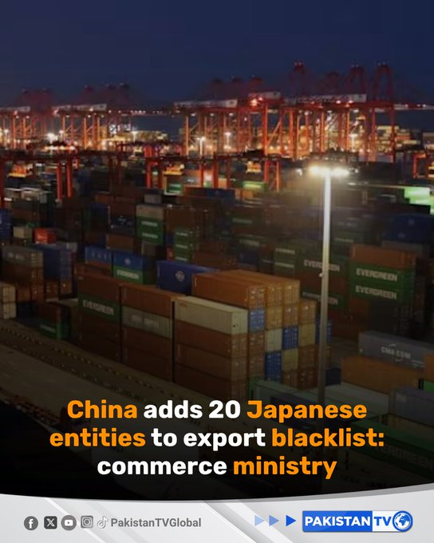

@PakTVGlobal
📝 原文: China added 20 Japanese entities, including the National Institute for Defense Studies, to a blacklist on Monday aiming to block the export of dual-use items, the commerce ministry said.#China#Japan#Trade#Geopolitics#PakistanTv
🇨🇳 译文: 中国商务部表示，中国周一将包括防卫研究所在内的 20 个日本实体列入黑名单，旨在阻止两用物项出口。#China#Japan#Trade#Geopolitics#PakistanTv


🕒 2026-06-29T05:20:43+00:00